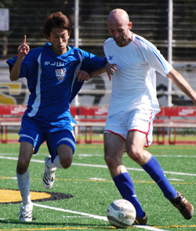
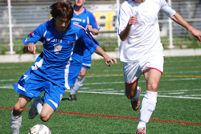
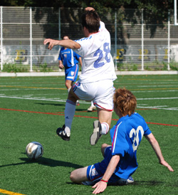
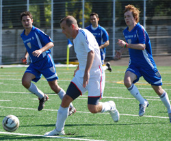

|
ASIJ, Sunday 21st October,
The year was 2087 and little Sid Lloyd III looked at his Puma-sponsored personal info-pad showing a match report from 22 October 2007. “5-0! That must ‘ave been a right ‘ammering” he said, mimicking the accent of his Great Great Grandfather, old man Lloyd, or Snowy, as he was now affectionately known. Snowy had given him the info-pad from his turbo wheelchair a few days earlier but if little Lloyd had witnessed the game in person, as is so often said, he would have seen a different match than the one the result suggested.
Yes, on the day, BFC were deserved winners and it is also true that the Vags failed to create many good clear-cut chances but the five goal difference was perhaps a little flattering. Prior to the game, the Vags felt that the near perfect surface of the pitch kindly provided by the American school at Tama would favour BFC but as the opening moments illustrated, the game started off finely balanced and, if anything, it was fitness that was probably the most significant difference between the sides over the whole 90 minutes.
Spanish archer
It was not to be the football that would grab the attention of the handful of spectators in the early stages, however. With tensions running high and the pre-match camaraderie over, a flashpoint seemed inevitable and after less than ten minutes it came. A collision between BFC poacher Himmer and Vagabond’s self-styled Northern hard man O’Connell ended with both going down, admittedly, like a couple of two dollar whores. O’Connell reacted first “complaining”, by using a mixture of choice Anglo Saxon phrases, that Himmer had given him the Spanish archer - El Bow. Himmer himself was surprisingly non-vocal given that he claimed shortly afterwards that he himself had been felled. Nevertheless, despite the ‘man-bags at dawn’ (it did not warrant handbag status), neither combatant required medical attention.
Angry Yorkshireman
BFC legend, Gordon Liversidge, officiating on the day showed he was having none of it saying: “I’m ‘aving none of it!” but what followed surely would have made the aforementioned whores blush. Certainly, nearby Vags’ player Steve Glenn’s face was bright crimson, perhaps through shock but then again when does the ‘factor-50 kid’ not have a red face? O’Connell’s passion for the Vags is admirable but on this occasion it almost got him an early onsen as he continued his protestation entering what could be described as the “Tourette’s Zone” with Himmer himself providing accompaniment with the occasional chirp of his own. As a result, a few Vags’ players were twitching nervously wondering how Liversidge might handle the affair and perhaps the Yorkshireman was lucky to escape with just a yellow card. On the subject of Liversidge, it must be said that he officiated well throughout a difficult match.

Paraguayan marksman
Following the early excitement, the game settled down into a pattern with the Vag’s system seeming to stymie BFC as they had planned. Similarly though, Vags played some nice stuff but could only carve-open half-chances at best with Wadsworth and Sahara Jnr, in particular, working well. With this pattern crystallizing it looked like the game was heading for nil-nil at the break but, just before the half was up, a one-two between Aranda and Robertson caught the Vags off-guard and allowed the Paraguayan to unleash a shot that squirmed unkindly beneath ‘goal-tender’ Mignon’s body – one nil.
From a Vags’ perspective, going one-nil down was disappointing but their overall game plan was paying off and after half-time the matches’ pattern continued until around the 65-minute mark. Up to this point, the Vags midfield was stringing some nice passes together with Wadsworth, Quinn, Sparkes and Hughes working well and Sahara Snr, Burt and Baxter putting in a lot of work down the flanks. Similarly, the defence of O’Connell, Southam and Glenn looked comfortable with Mignon dealing nicely with any dangerous crosses and the few other shots that came at him.
Unfortunately for Vags, however, as in the team’s previous games the two front men, Sahara Jnr and Musgrove, were regularly isolated, a situation compounded by the added difficulty of being shepherded by the well-organised BFC defence, notably Doyle and Mulligan. With few options, a loss of possession often ensued through no fault of their own which is an area the team needs to address.
Ironically, it was in an attempt to rectify this problem that the Vag’s midfield got caught forward with the BFC breaking quickly down the right. Himmer found himself alone and put in a dangerous low cross to the far post leaving O’Connell with no choice but to stretch out a toe to prevent a definite goal from Day who was right behind him. Sadly for him he was unlucky enough see the ball roll cruelly into the net.
Impish Japanese man
With two goals to make up the Vags took on a more attacking approach but this seemed to provide more space for BFC and they made use of it with Manson becoming increasingly influential. Consequently, Baxter had to put in a huge amount of effort, often with two players to mark while Hughes also made some great recovery runs. But as the game progressed it got too much even for them and subsequently, BFC’s resident imp Shosuke found space, picking the ball up in the box, turning well then firing home.
At this stage the situation looked bleak for Vags with no other option than to press forward which they did. At one point it looked like it might pay dividends with their best opportunity coming from a Sparkes’ pile driver but this was held well by Mignon’s opposite number Leonardis. But with more players going forward the Vags were again left vulnerable from counter attack and this danger materialised leading to two more BFC goals on the break, on both occasions, from skipper Day.
Philosophical Irishman
What can Vags take from the day? The knowledge that they were again able to compete with a team at the top end of the division for most of the game but need to sustain this if they are to survive. Perhaps more worrying though, as gleaned from the post-match banter, both teams could be a man down quite soon as surely Al and Ged (our very own Boutros-Boutros Ghali and Thabo Mbeki) will be seconded to the UN.
Overpriced Ray-Bans
Other nuggets emerging, so to speak, from the post-match analysis were that any player that gets a bout of the Nobby Stiles (piles) will surely not suffer long as it seems the British Football Club has more than it’s fair share of experts but a final word from Vags’ premier raconteur, Gary Quinn. On a more positive note, the big guy believes that the future of the Vags looks bright – and who would argue with that man – after all, there’s an Irishman who knows more than one way to kill a rabbit.
Report by Steve Glenn
|